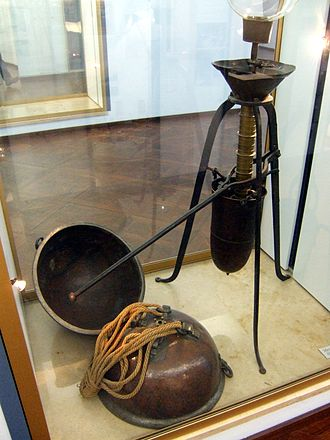

Космічний простір
Космічний простір існує поза атмосферою Землі й між небесними тілами. Як зазначено в передмові, космічний простір не зовсім порожній,він має низьку щільність частинок, переважно плазму водню та гелію,а також електромагнітне випромінення, нейтрино, пил та космічні промені. Базова температура космосу, котра визначається реліктовим випроміненням Великого вибуху, становить 2,7 Кельвінів (−270,45 °C; −454,81 °F).
Плазма між галактиками складає близько половини баріонної (звичайної) речовини у Всесвіті; вона має густину менше одного атома водню на кубічний метр і температуру мільйони Кельвінів. Місцеві скопища речовини, скупчуються у зірки та галактики. Дослідження показують, що 90 % маси більшості галактик перебуває у невідомому вигляді, що називається темною матерією, яка взаємодіє з іншою речовиною за допомогою гравітаційних, але не електромагнітних сил. Спостереження дозволяють припустити, що більшість масової енергії у спостережуваному Всесвіті, це темна енергія — вид енергії вакууму який недостатньо вивчений. Міжгалактичний простір охоплює більшу частину обсягу Всесвіту, але навіть галактики та зоряні системи майже цілком складаються з порожнього простору.
Відомі дослідники та філософи:
350 року до н. е., грецький філософ Арістотель припустив, що природа не терпить порожнечі — принцип, який став відомим як жах вакууму. Ця концепція побудована на онтологічному аргументі 5 століття до н. е. грецького філософа Парменіда, який заперечував можливе існування порожнечі в просторі. Виходячи з цього міркування про те, що вакууму не може бути, на Заході багато століть вважалося, що простір не може бути порожнім. Ще в 17 столітті французький філософ Рене Декарт стверджував, що весь космос повинен бути заповнений.
У стародавньому Китаї астроном 2-го століття Чжан Хен досяг переконання, що космос мусить бути нескінченним, виходячи далеко за межі механізму, який підтримував Сонце та зірки. У книжках, що збереглися в школі Хсюан Іє, йдеться про те, що небо безмежне, «порожнє і не має речовини». Отже «Сонце, Місяць і скупчення зірок плавають у порожньому просторі, рухаючись або стоячи нерухомо».
Італійський вчений Галілео Галілей знав, що повітря має вагу, і завдяки цьому воно підлягає силі тяжіння. 1640 року він показав, що встановлена сила чинить опір утворенню вакууму. Однак його учневі Еванджелісті Торрічеллі залишиться виготовити пристрій, який утворить частковий вакуум, 1643 року. Цей дослід спричинив створення першого ртутного барометра і сприяв науковому розголосу в Європі. Французький математик Блез Паскаль вважав, що оскільки стовпчик ртуті підтримується повітрям, то колонка-показник повинна бути коротшою на більшій висоті, де тиск повітря нижчий. 1648 року його зять Флорін Перьє повторив дослід на горі Пюї-де-Дом у центральній Франції і виявив, що стовпчик був коротший на три сантиметри. Таке зниження тиску було показано також піднесенням напівповної повітряної кулі догори, та спостереженням як вона поступово розширюється, а потім стискається після спуску.
 Вакуумний насос з півкулями у німецькому музеї